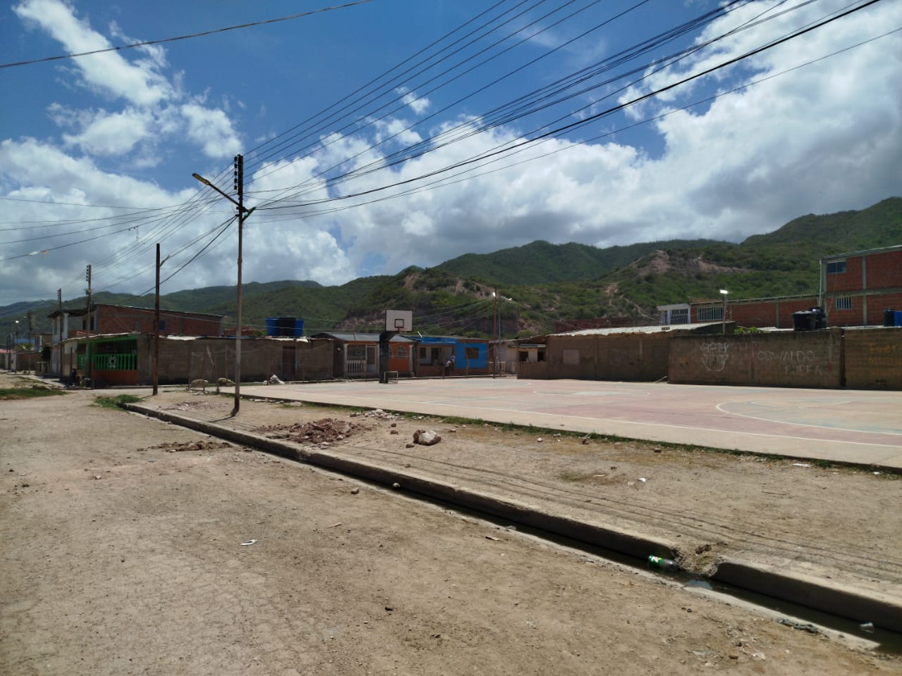
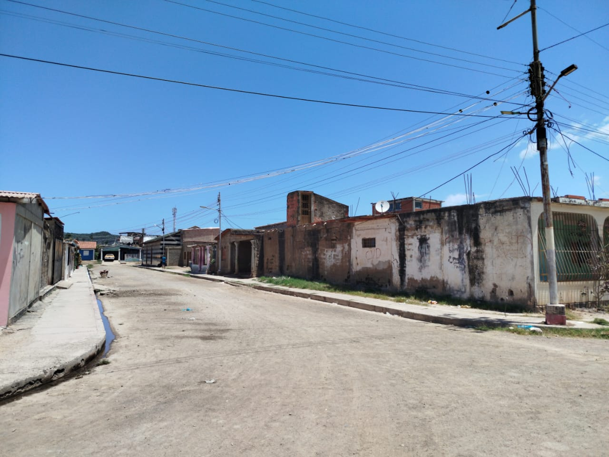
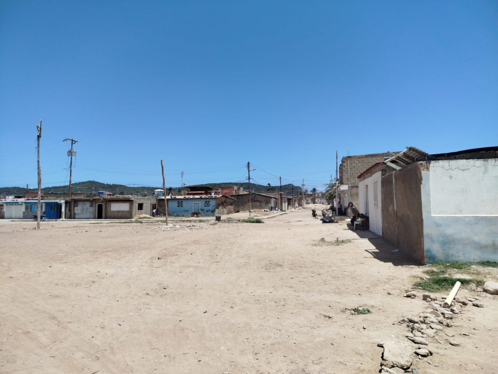

El sector Salina 1 se ubica en un margen lateral de la vía nacional, posicionándose estratégicamente como el área adyacente a uno de los principales corredores viales de la parroquia. Urbanísticamente, el sector se define por su proximidad al centro educativo de la localidad (Liceo), el cual se encuentra emplazado en el sector opuesto de la vía, creando un eje de alto flujo peatonal y estudiantil. El elemento más distintivo de Salina 1 es su amplio placetón baldío, un espacio de terreno libre de edificaciones permanentes que cumple una función comunitaria polivalente; este recinto es el lugar predilecto para la realización de eventos religiosos estacionales y sirve de base para la instalación de servicios recreativos itinerantes y ferias que visitan la zona de El Morro.



